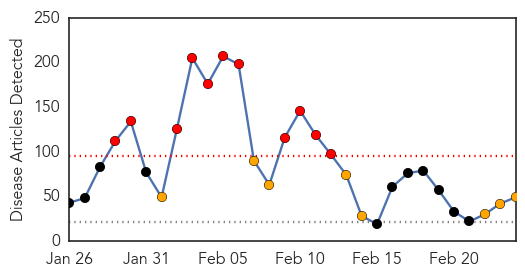
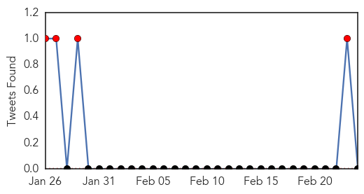
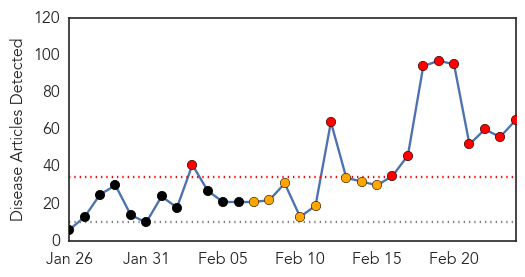

Measles
30-Day Web Trend
11 alerts, 8 warnings

30-Day Twitter Trend
7 alerts, 0 warnings

Article Locations

Article Confidences
Top Articles:
- 0.998
- California Reports No New Measles Cases Since Last Update
- 0.986
- Berlin counts 254 new cases of measles in 2015
- 0.981
- Measles outbreak continues nationwide — Sonoma State Star
- 0.978
- Conspiracy Theorist: 2/24
- 0.978
- Neil Miller: Why people choose not to Vaccinate
- 0.971
- American parents are increasingly choosing fear over science
- 0.966
- California reports four more measles cases in Disneyland outbreak
- 0.963
- California reports four more measles cases in Disneyland outbreak, Americas News & Top Stories
- 0.963
- Toddler dies of measles in Berlin, first death in outbreak
- 0.959
- News Scan for Feb 23, 2015
- 0.954
- German authorities to boost vaccination rates after toddler dies from measles
- 0.946
- Before you get your kids vaccinated - get informed about the risks: Alison Mullins
- 0.942
- As flu season winds down, health officials continue to encourage
- 0.940
- Fifteen Years After A Vaccine Scare, A Measles Epidemic
- 0.940
- Mandatory Vaccinations: State of the Union
- 0.938
- Coeur d'Alene Press: Local News
- 0.935
- Princeton University Measles Case Confirmed
- 0.925
- Undocumented immigrants not responsible for measles outbreak: CDC officials
- 0.923
- Four More Measles Cases in California
- 0.922
- CDC Official Dismisses Claim That Undocumented Immigrants Bring Measles Into The U.S.
- 0.914
- A new threat appears along the U.S.-Mexico border: Americans with measles
- 0.914
- Leach bill aims to end philosophical exemption from vaccines
- 0.906
- I Was on the Front Line of L.A.'s Last Measles Outbreak
- 0.901
- 4 New Measles Cases Reported in California
- 0.877
- As measles spreads, concern over unvaccinated children does, too
- 0.873
- Toddler dies as measles outbreak hits German capital
- 0.860
- Measles kill toddler as Berlin school closes
- 0.854
- Measles death in Germany prompts calls for mandatory vaccinations
- 0.850
- Protect yourself from measles
- 0.847
- Measles outbreak in U.S. tops 150 cases
- 0.842
- WHO Launches Billion-Dollar Health Appeal for Four Countries
- 0.841
- Aliso Niguel High School
- 0.837
- Test results suggest child does not have measles, Allegan County health officials say
- 0.837
- Answers to your questions about the measles outbreak
- 0.827
- Spotty logic undermines argument for measles vaccine
- 0.814
- WHO Launches Billion-Dollar Health Appeal for Four Countries
- 0.814
- Vaccination against measles in Kazakhstan puts teenagers into hospital beds. Health. Tengrinews.kz
- 0.813
- WHO Launches Billion-Dollar Health Appeal for Four Countries
- 0.797
- Proposed Law Could Take Away ‘Personal Belief’ Vaccine Exemptions in California
- 0.794
- Measles Outbreak Has Nothing To Do With Illegal Immigration
- 0.714
- Vail Daily column: Start by washing your hands
- 0.688
- dr.dk/Nyheder/Andre_sprog/English
- 0.687
- Majority of Americans Think They Should be Required, Poll Shows
- 0.621
- Infant death sparks measles jab debate
- 0.603
- WVU expert says West Virginia sets example for controlling infectious disease
- 0.580
- Vaccine needed for selfishness, hysteria and stupidity
- 0.559
- Another case of measles confirmed in Ontario
- 0.524
- Measles death prompts vaccine call
- 0.506
- Measles death prompts vaccine call
Top Tweets:
-
No tweets found for Feb 24, 2015
Swine Flu
30-Day Web Trend
11 alerts, 8 warnings

30-Day Twitter Trend
1 alerts, 0 warnings

Article Locations

Article Confidences

Top Articles:
- 1.000
- Swine flu: Will assure all help to state governments, says JP Nadda
- 1.000
- Three cases test positive for swine flu
- 1.000
- Gujarat junior health minister tests positive for swine flu
- 1.000
- Indian City Bans Gatherings Over Swine Flu Outbreak
- 0.999
- 21 more deaths take swine flu death toll to 833
- 0.999
- Minister for health being treated at a special isolation room created at his residence: Gujarat
- 0.999
- India's Ahmedabad bans gatherings over swine flu outbreak, South Asia News & Top Stories
- 0.999
- State takes extra precautionary steps towards swine flu
- 0.999
- 214 Swine Flu Deaths In Rajasthan Alone
- 0.999
- 841 deaths due to swine flu, matter of great concern
- 0.999
- Swine flu toll rises to 841 in less than 2 months
- 0.999
- Indian city bans gatherings over swine flu outbreak
- 0.999
- Indian city bans gatherings over swine flu outbreak
- 0.999
- Here’s how you can manage Swine flu in Bengaluru: Akshatha M
- 0.998
- JP Nadda to make statement in Parliament on swine flu
- 0.998
- Indiablooms - First Portal on Digital News Management
- 0.997
- Flu rap on four big hospitals
- 0.997
- Nine fresh cases of swine flu in Telangana
- 0.997
- One death and record 66 new cases of swine flu in city
- 0.996
- Nine fresh cases of swine flu in Telangana
- 0.996
- Swine flu claims one more life, death toll reaches 100 in state
- 0.995
- Mamata wants swine flu test lab in Kolkata, Dooars
- 0.994
- J&K witnesses huge number of positive cases of swine flu
- 0.993
- Swine flu in Ahmedabad: Government bans people from gathering in large groups
- 0.993
- Health desks set up at border points
- 0.993
- No H1N1 vaccinations for Vashi civic hospital staffers yet
- 0.992
- Doctor admitted in critical condition, swine flu suspected
- 0.992
- State under watch for swine flu
- 0.992
- Mirwaiz castigates state health department
- 0.991
- Six more swine flu victims die in MP, toll reaches over 123
- 0.989
- Swine flu cases rise to 34 in Ghaziabad
- 0.988
- No swine flu death reported in Maharashtra on Monday
- 0.985
- No need to vaccinate people against swine flu: Nadda
- 0.985
- Focus on sequencing of swine flu virus: immunology expert
- 0.984
- Govt show-causes pvt hospitals for refusing treatment
- 0.981
- No need to vaccinate people against swine flu: Nadda
- 0.981
- No need to vaccinate people against swine flu: Nadda
- 0.981
- No need to vaccinate people against swine flu: Nadda
- 0.981
- No need to vaccinate people against swine flu: Nadda
- 0.979
- Swine flu death toll reaches 51
- 0.977
- 350 swine flu cases in UP, death toll mounts to 10
- 0.972
- 4 more die of swine flu in Maha, toll climbs to 103
- 0.969
- Third swine flu case confirmed in Nagaland
- 0.968
- 841 deaths due to swine flu, matter of great concern: Govt
- 0.965
- Senior doctor admitted for suspected swine flu
- 0.961
- Expert urges India to sequence swine flu virus
- 0.958
- Swine flu: No need to vaccinate people against the disease, says Health Minister J P Nadda
- 0.954
- Sequence H1N1 virus in India: expert
- 0.952
- No cause for swine flu panic, says Bengal government
- 0.939
- 11 new cases of swine flu detected in WB
Showing top 50 articles...
Top Tweets:
- 0.732
- RT: Porbandar LionsClub (India) distributed swine flu medication and boiling water http://t.co/ju3PdpobNZ
- 0.693
- RT: 21 more die of swine flu, toll reaches 833 http://t.co/eg8EpgQTFL
- 0.537
- Killer swine flu strikes India http://t.co/ufWCXspCdM